Activity 4: ROV Motor Control
Week 4 of Building Underwater Robots
Description
In this hour session, students will learn about motors and create their own motor systems for their ROVs. Students will go step-by-step through the process of connecting a battery pack, switches, and tethered motors, eventually waterproofing the system and customizing their builds.
Materials Required
- Projector or computer with presentation
- Optional: ROV for demonstration
- 3 ft long 2-strand white wire
- 9V battery holder
- Red and green solder seal wire connectors
- Wire strippers
- Sharpie
- Heat gun
- Red and black wire spools
- 2 switches
- Control box (base and top)
- 6-wire black tether
- Blue and yellow wire spools
- Screwdriver
- Bolts for control box
- Electrical tape
- 2 motors and propeller parts
- 2 PVC motor holders
- Coax seal
- Zip ties
ROV Motor Control Presentation PDF
ROV Motor Control Presentation Link
Optional: ROV Motor Control Steps PDF
Learning Outcomes
- Identify the basic components used in ROV motor systems
- Understand the electrical connections for powering and controlling motors
- Safely use solder seal connectors and heat tools
- Build and waterproof an underwater motor system
- Test and troubleshoot an ROV motor system
Agenda
1. Make Battery Connections
1.1 Gather Your Materials
- 1x 3 ft long 2 strand white wire
- 1x 9v battery holder
- Red Solder Seal Wire Connectors (Share with Others)
- Wire Strippers (Share with others)
- Sharpie (Share with others)
- Heatgun (Share with others)
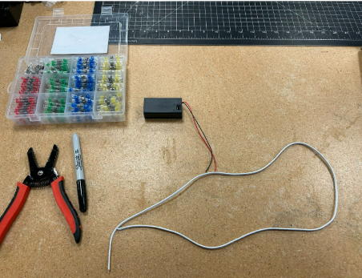
1.2 Battery to Wires
- Separate a small amount of the white wire at the ends. Strip the ends of the white wires carefully to about ½ in to 1 inch long on all 4 ends.
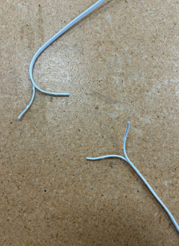
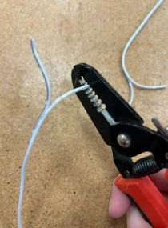

- Strip the battery holder wires ¼–½ inch.


- Mark one side of the white wire on both ends with Sharpie to label it GND.

- Twist all wire ends so they are neat.

- Pick one end of the white wire with the sharpie mark to connect to the black wire of the battery holder. Use a solder seal wire connector to connect the black wire of the box and the sharpie marked wire together. Put the ends of the wires inside the seal piece and make sure the silver part in the middle (solder) is touching both wires. You may have to push the wires in further ro reach properly.

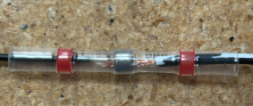
- Use the heat gun about 3 inches away from the wire to very carefully to shrink the connector ON A HEAT SAFE SURFACE - the regular wood of the table will burn so use a piece of scrap wood. Wait until the solder in the middle has melted to stop heating it. Don’t touch it with your fingers until it has cooled. Try your best not to melt the wires themselves and if you see that happening turn off the heat gun and ask for help.
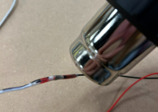
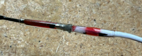
Wait till it has cooled and check that the wires are secure in the connector and don’t move when you lightly tug on them.
Now on the same end of the white wire take the side you did not mark and connect it to the red wire. Make sure the metal in the connector is touching both the wires. Use the heat gun very carefully to shrink the connector. Don’t touch it with your fingers until it has cooled.


1.3 Wires to the Switches
Requirements - Red wire spool - Black wire spool - 2 switches - Control box
- Cut two 8-inch red and two 8-inch black wires.

- Strip the ends of the loose black and red wires about ½ in and twist the ends so they are neat.
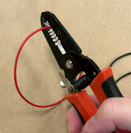
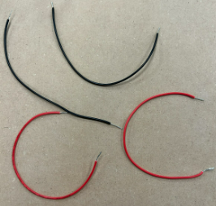
- Identify the GND (Sharpie) side of the white wire and twist it with the two black wires.


- Use a green solder connector and run it over both the black wires and bring it to the point where the wires are twisted. Make sure the silver middle is overtop the twisted wires. Again carefully use the heat gun on a safe surface to shrink the connector. Do not touch it will your hands until it has cooled.
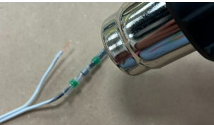
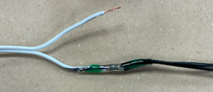
- Twist the unmarked white wire with the two red wires and connect using another solder connector.Run a green solder connector over top both of the red wires and bring it to the point the wires are twisted. Make sure the silver middle is overtop the twisted wires. Again carefully use the heat gun on a safe surface to shrink the connector. Do not touch it will your hands until it has cooled.
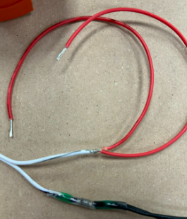

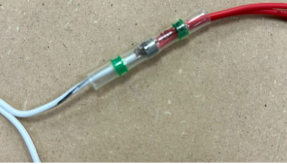


- Route wires through the hole in the control box and tie a knot to prevent slipping.

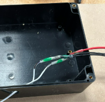

- Loosen switch screws and hook a red wire to one middle terminal of the switch. You do not have to take them out all the way. While it is hooked tighten the screw so that the red wire is stuck underneath it and it is snug enough you can not tug it out easily


- Hook a black wire to the opposite middle terminal and tighten.


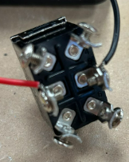
- Repeat for the second switch with the remaining red and black wires.
1.4 Motor Tether to the Switches
Requirements - 6 wire black tether - Blue wire spool - Yellow wire spool - Screwdriver - Wire strippers - 2x Switches and switch secures - Control box base and top - Bolts for control box lids - Electrical tape
- Take the black tether and strip the ends so that the colored wires are showing. Strip the black about 6 inches on one side and 3 inches on the other.
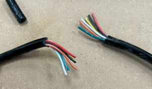 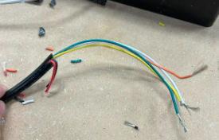
Strip the yellow, white, orange and green colored wires ½ inch and twist the ends of the wires so they are neat.
Push the 6-inch tether side through the same control box hole.
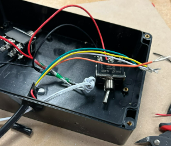
- Cut two blue and two yellow wires about 2½ inches long and strip ends.
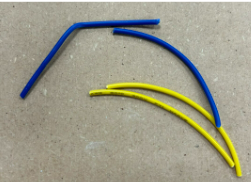
- Connect the white tether wire + a short blue wire to one switch terminal (above black wire).

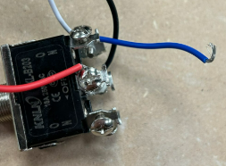
- Connect the other end of the blue wire diagonally opposite (below black wire).

- Connect the orange wire + yellow wire to the opposite top terminal (above red wire).
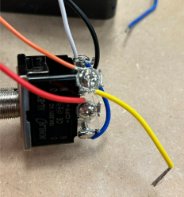
- Connect the other end of the yellow wire diagonally opposite (below red wire).
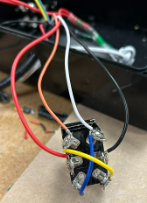
- Repeat for the second switch using the yellow and green tether wires + other yellow/blue jumpers. Screw the other end of the small yellow wire into the pole diagonal from it so below the black wire Now take the green tether wire and the short blue wire and screw them into the top right pole (above the black wire).Screw the other end of the blue wire diagonally across from it so underneath the red wire. The end result should be a cross shape
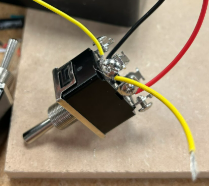


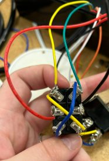
- Now check both switches for straggly wires that might accidentally touch other poles. You can trim them away or try to tuck them. Crossing poles is not good and your robot won’t work

- Mount switches into the lid: white/orange switch on right, yellow/green on left.

- Use this order on each switch: on/off label, washer, nut, rubber topper (optional).
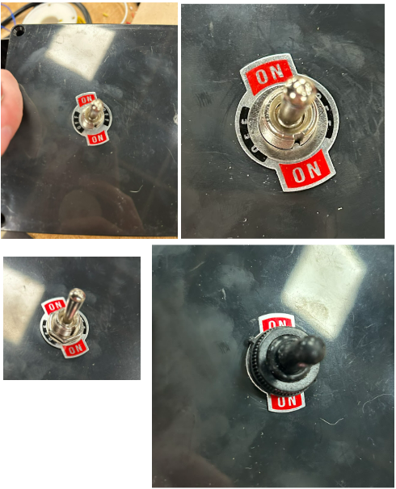
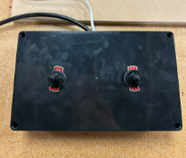
- Use electrical tape to secure white wire and tether inside the box.

- Bolt the lid onto the control box.
2. Make Motor-to-Tether Connections
2.1 Prep the Motors
Requirements - 2 motors and propellor parts - 2 PVC motor holders 1. Attach propellers to the motors using the presentation link.

- Mount motors into ROV: back motor facing backward, vertical motor facing up.
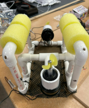

- Strip brown and black wires of both motors.
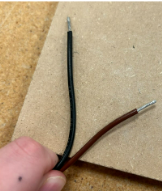
2.2 Connect the Tether to the Motors
- Strip the orange, white, yellow, and green tether wires ½ inch.
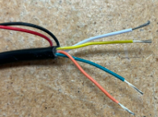
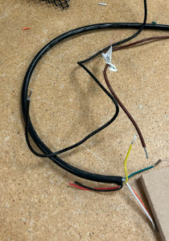
- Connect white tether wire to brown motor wire using solder connector. Carefully use the heat gun to melt the solder. Do not touch the wires till they have cooled. Make sure to do this on a safe surface such as the scrap wood.

- Connect orange tether wire to black motor wire.

- For vertical motor, connect yellow tether wire to brown motor wire.

- Connect green tether wire to black motor wire.

- Use heat gun to seal all connections safely.
3. Plug it In
- Check that no wires are in motor paths.
- Plug in 9V battery and flip switch on.
- Use switches to test motor direction.
- If issues arise, check wire connections or ask for help.
4. Waterproofing and Zip Tie
- Wrap motor-to-tether solder joints with coax seal—fully squish and cover.
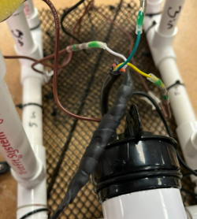

- Seal the tether base where wires emerge.

- Cover red and black tether wires if unused.
- Use zip ties to cleanly attach wires to the frame.
- Adjust balance by compensating if wires add weight to one side.
- Trim zip ties.

5. Extensions
- Test the finished ROV in a small pool.
- Allow time for students to decorate or customize their ROVs.
Reflection
Reflect on what went well and where challenges occurred during motor assembly. Were any parts difficult to connect? Did waterproofing work as expected? What improvements could be made?